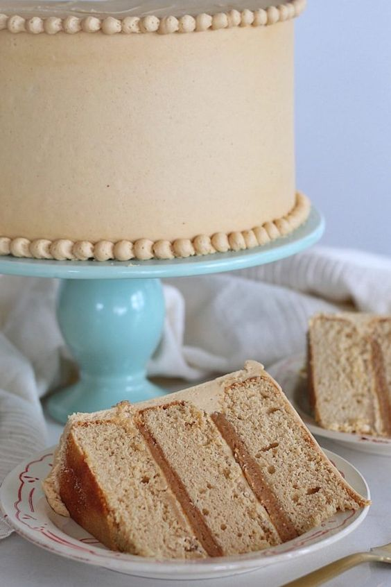

Butter Cake

El pastel de mantequilla es un pastel tradicional del sur de los Estados Unidos. El relleno básico consiste en una mezcla de huevos, azúcar, suero de mantequilla, mezcla de galletas secas, y mantequilla; variaciones en la receta puede incluir sabores como cáscara de limón. Las tartas de mantequilla pueden ser hechas con o sin corteza de pastelería. El líquido de relleno se vierte en un molde de tarta y luego se cocina. Se relaciona con la tarta de ajedrez y la tarta de pacana. El pastel se puede comer mientras está caliente del horno o después que se enfría.